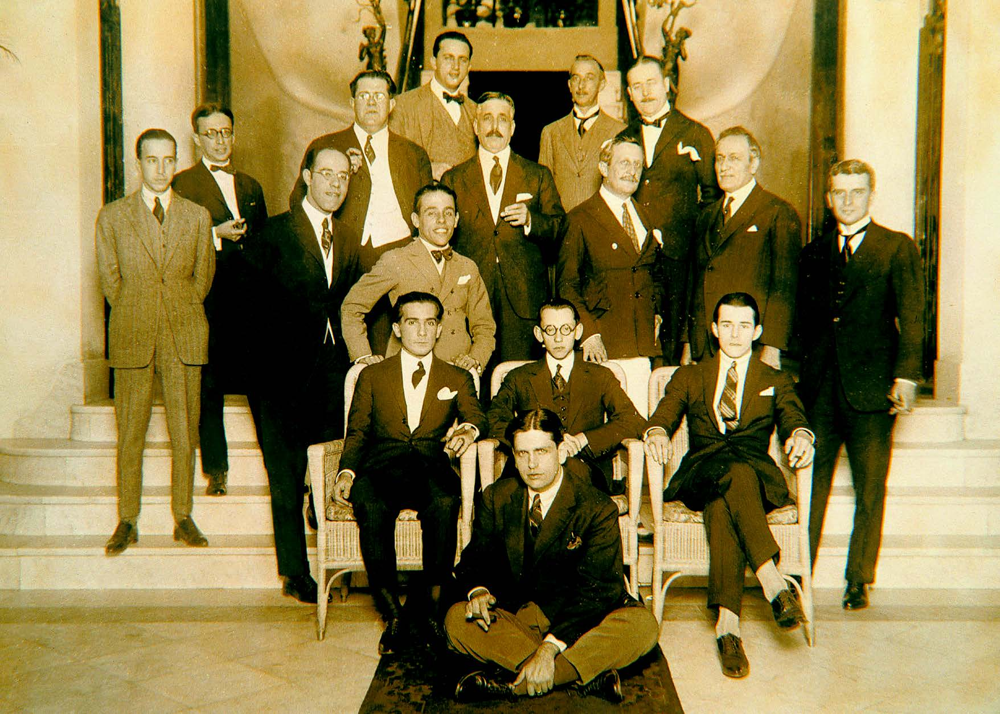
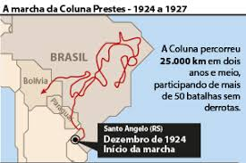

A semana de arte moderna ocorreu entre os dias 13 à 18 de fevereiro de 1922, no Teatro Municipal de São Paulo e se tratou de uma grande manifestação artística e cultural. Houve danças, apresentações, esculturas, pinturas, poesias, e palestras. Os artistas que participaram convergiam em uma visão diferentes de tudo que já havia sido produzido até aquele momento. Incentivados pelas vanguardas europeias, buscavam uma renovação social e artística a nível Nacional.
O evento chocou bastante a população e entre as características gerais da semana de 22 estavam:
Ruptura com o tradicionalismo
Critica ao modelo parnesiano
Valorização da identidade e cultura brasileira
Liberdade de expressão
Ausência de formalismo
Grande parte dos artistas presentes eram descentes da oligarquia paulista, isso facilitou o evento pois houve apoio do presidente Paulista Washington Luís. Artistas que pudiam viajar de um país para o outro, retornaram da Europa, com uma bagagem cultural, assim foi formado o movimento modernista no Brasil.
O evento foi inaugurado pela palestra do escritor Graça Aranha: "A emoção estética da Arte Moderna". Seguido de músicas e exposições. Foi um dia calmo e havia muitas pessoas no teatro.
No segundo dia, houve uma palestra do escritor e artista plástico, Menotti del Picchia e também um musical, logo após Ronald de Carvalho, fez a leitura do poema de Manuel Dias, "Os sapos" pois Dias estava em uma crise de tuberculose. Este poema possuía severas críticas a poesia parnasiana, que rendeu insultos e relinchos para o Ronald. A seguir o polêmico poema:
Enfunando os papos,
Saem da penumbra,
Aos pulos, os sapos.
A luz os deslumbra.
Em ronco que aterra,
Berra o sapo-boi:
- "Meu pai foi à guerra!"
- "Não foi!" - "Foi!" - "Não foi!".
O sapo-tanoeiro,
Parnasiano aguado,
Diz: - "Meu cancioneiro
É bem martelado.
Vede como primo
Em comer os hiatos!
Que arte! E nunca rimo
Os termos cognatos.
O meu verso é bom
Frumento sem joio.
Faço rimas com
Consoantes de apoio.
Vai por cinquenta anos
Que lhes dei a norma:
Reduzi sem danos
A fôrmas a forma.
Clame a saparia
Em críticas céticas:
Não há mais poesia,
Mas há artes poéticas..."
Urra o sapo-boi:
- "Meu pai foi rei!"- "Foi!"
- "Não foi!" - "Foi!" - "Não foi!".
Brada em um assomo
O sapo-tanoeiro:
- A grande arte é como
Lavor de joalheiro.
Ou bem de estatuário.
Tudo quanto é belo,
Tudo quanto é vário,
Canta no martelo".
Outros, sapos-pipas
(Um mal em si cabe),
Falam pelas tripas,
- "Sei!" - "Não sabe!" - "Sabe!".
Longe dessa grita,
Lá onde mais densa
A noite infinita
Veste a sombra imensa;
Lá, fugido ao mundo,
Sem glória, sem fé,
No perau profundo
E solitário, é
Que soluças tu,
Transido de frio,
Sapo-cururu
Da beira do rio...
Interpletando o poema, observar que o sapo-tanoeiro representa o poeta parnasiano, que põe as regras para compor. Enquanto o sapo-cururu representa o poeta modernista sedento por liberdade que reivindica a simplicidade e o uso da linguagem do cotidiano. Como desfecho o poema afirma que o estilo de poesia parnasiano estava ultrapassada.

Artistas modernos
Alguns dos artistas que participaram do evento, com seus anos de nascimento falecimento, respectivamente:
Anita Malfatti (1889-1964)
Menotti Del Picchia (1892-1988)
Ronald de Carvalho (1893-1935)
Guilherme de Almeida (1890-1969)
Sérgio Milliet (1898-1966)
Heitor Villa-Lobos (1887-1959)
Tácito de Almeida (1889-1940)
Di Cavalcanti (1897- 1976)
Guiomar Novaes (1894-1979)
A crítica à semana de arte foi intensa, as pessoas ficaram desconfortáveis com as exposições e não conseguiram compreender a nova proposta de arte. Cada dia que passava os teatros ficavam mais vazios e as retaliações aumentavam. Populares comparavam os artistas à doentes mentais e loucos, particularmente Monteiro Lobato atacou severamemte aos artistas através de um artigo.
Entretanto após o fim da semana de 22, foram criadas várias revistas, movimentos e manifestos. Artistas de diversos locais passaram a se reunir para continua a propagar o modernismo pelo país.
A Semana de Arte Moderna deu intensa experiência estética e intelectual tanto aos espectadores quanto aos artistas, tornando-se um marco valioso na história cultural brasileira.
Hoje em dia, a Semana de Arte Moderna ainda é um evento semanal – embora com um escopo menor. Em qualquer domingo, galerias de arte de São Paulo abrem suas portas ao público
gratuitamente para o 'MAM' (Museu de Arte Moderna). O MAM de hoje mantém esses valores vivos: promove a arte contemporânea com forte foco nos artistas brasileiros.
O mundo havia acabado de completar a Primeira Guerra Mundial, e era fundamental que todos os países fortalecessem suas forças militares depois. No entanto, os militares brasileiros estavam em uma grande crise durante esse período, pois o governo não forneceu fundos para necessidades militares básicas, como munições, cavalos, medicamentos e salários não pagos. Outro agravante foi a demora na promoção das trocas de patentes, o que significava que os inquilinos poderiam ficar presos no mesmo emprego por anos.
Durante os anos de 1920 a 1930, o tenentismo foi um movimento militar no Brasil com uma agenda política. O movimento tem esse nome, pois a maioria de seus membros possui patente de arrendamento. Os líderes militares acabaram perdendo seu poder dentro do sistema político, que se estabeleceu nos primeiros anos da República com o presidente Deodoro da Fonseca, que era o marechal – o oficial mais graduado dos militares.
Durante a República Velha no Brasil, os estados de São Paulo e Minas Gerais governaram o país usando a política do "café com leite", na qual os presidentes eram eleitos de acordo com um acordo assinado pelos dois estados, com os presidentes alternando entre os dois estados , ora paulista, ora mineiro. Os presidentes eleitos, como o resto da classe política, eram civis.
O objetivo do tenentismo era recuperar o poder que havia sido perdido para a República Velha, bem como implementar outras propostas políticas, como o voto secreto, a abolição da corrupção, um Estado mais forte, reforma educacional e independência judicial, entre outras. Os civis abraçaram o tenentismo à medida que ele cresceu em popularidade, dando legitimidade às ideias tenentistas.

Trajeto da Coluna Prestes
Atos como protestos e a implementação das reformas planejadas foram realizados para dar cumprimento aos planos dos inquilinos. A Revolta 18 do Forte de Copacabana (1922), a Comuna de Manaus (1924), a Revoluço de 1924 e a Coluna Prestes foram todas ações tomadas contra o atual governo (1925-1927).
Em 1929, a República Velha decidiu não eleger um presidente mineiro — o que era legal na época —, mas surgiu a proposta de eleger um presidente paulista, com a justificativa do crash da bolsa de 1929, que teve efeitos devastadores sobre a economia cafeeira, com São Paulo sendo o mais atingido. Com isso, um presidente paulista seria preferível, mas o estado de Minas Gerais se recusa a aceitar tal concessão e está em desacordo com São Paulo. Minas Gerais forma a Aliança Liberal com o apoio de outros estados, principalmente do sul do país. Como resultado, os tenentistas apoiam e se unem à Aliança Liberal em 1929 com o objetivo de derrubar o regime.
No ano seguinte, o tenentismo foi fundamental para garantir o sucesso da Revolução de 1930, liderada por Getúlio Vargas. Vargas sabe recompensar seus aliados, por isso indica alguns inquilinos para cargos políticos em vários estados brasileiros. O tenentismo ficou evidente durante o governo Vargas. Alguns dos inquilinos que participaram da Revolução de 1930, como Ernesto Geisel, Castelo Branco e Médici, estiveram presentes durante o golpe militar de 1964.
{kind=link}
{kind=link}
{kind=link}
{kind=link}
{kind=link}